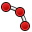
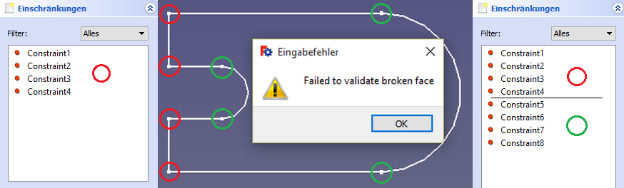
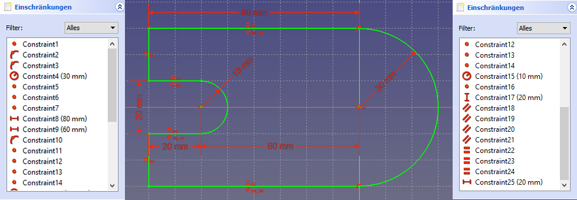

{kind=link}
Im Arbeitsbereich Sketch (Skizzieren) werden zweidimensionale Linien (i.d.R. geschlossene Kurven bzw. Profil-Formen) gezeichnet, die vor allem als Grundlage für das Erstellen und Bearbeiten von Körpern im Arbeitsbereich PartDesign (Körper-Entwurf) dienen. In PartDesign wird meistens zuerst aus einer Profil-Kurve ein Quader diese Profils erstellt. Diesem Quader werden anschließend mit Hilfe weiterer Skizzen weitere Quader zugefügt ("Vorbauten" erstellen) oder abgezogen (Vertiefungen erstellen).
In diesem Arbeitsbereich wird sehr ähnlich wie beim tradionellen zweidimensionalen Technischen Zeichnen auf einem Zeichenblatt vorgegangen. Die hier erzeugten Skizzen bestehen ebenfalls aus exakten Geraden und Kreisen, als wären sie mit Hilfe von Lineal und Zirkel gezeichnet. Skizzieren in FreeCad darf somit nicht mit Freihand-Skizzieren verwechselt werden.
Contents
Besonderheiten der FreeCAD-Skizzen
Das Vorgehen beim Erstellen von FreeCAD-Skizzen ähnelt zwar dem des Technischen Zeichnens, die Skizzen sind aber nicht als Technische Zeichnungen verwendbar. Ihre Geraden und Kreise sind bestenfalls als nur eine Ansicht eines in einer Werkstatt herzustellenden Werkstücks geeignet. Die Maßangaben zeigen lediglich an, dass die entsprechenden Dimensionen als Variable mit je einem bestimmtem Wert erfasst, dass sie parametrisiert (siehe FreeCAD-Manual, Einleitung: (*) Der Befgriff parametrisch stammt aus der Mathematik. ...) sind.
Das Technische Zeichnen mit 2D-CAD
Die zweidimensionalen geometrischen Grundelemente, die zur Darstellung von orthogonalen Ansichten und Schnitten eines Werkstückes nötig sind, werden wie beim vorherigen Zeichnen von Hand in der vorgesehenen Größe und Position gezeichnet. Ihre Abmessungen und Positionen werden zur Vermaßung diesen entnommen und beigefügt.
Parametrisierung
In Freecad wird wie bei fast allen 3D-CAD-Systemen parametrisch gearbeitet. Für die Skizzen bedeutet das, dass die Dimensionen und Platzierungen aller zweidimensionalen geometrischen Grundelemente als Parameter mit Parameter-Name und mit einem variablen -Wert erfasst und verwaltet werden.
Der Vorgang des Erfassens als Parameter wird - leider nicht selbst-erklärend - auch als Bestimmen (oder Einschränken/Beschränken; englisch: to constrain, constraint) bezeichnet, weil dabei gleichzeitig im Vordergrund erkennbare und verwaltete Eigenschafts-Werte bestimmt werden, diese nicht mehr im Skizzen-Hintergrund bei den geometrischen Grundelementen versteckt und nicht mehr uneingeschränkt beliebig bleiben. Man kann nämlich Zeichnungen zunächst mit zufälligen Werten ihrer Elemente erstellen und den Vorteil schätzen, vorerst uneingeschränkt und im wörtlichen Sinne skizzieren zu dürfen. Beim anschließenden Parametrisieren müssen ohnehin Werte bestimmt werden, man setzt dafür die gewünschten Konstruktions-Werte ein.
Beginn und Ende des Skizzierens
Zu Beginn ist das Icon  (oder der erste Eintrag im Menü Sketch) anzuklicken.
(oder der erste Eintrag im Menü Sketch) anzuklicken.
Ab FreeCAD-Version 0.17 ist dieses Icon auch im Arbeitsbereich PartDesign enthalten, so dass von dort aus in den Arbeitsbereich Sketch umgeschaltet werden kann (nach dem Ende der Skizzierarbeit wird automatisch in den Arbeitsbereich PartDesign zurückgeschaltet).
Beenden der Skizzierarbeit ist auf verschiedenen Wegen möglich : z.B. über "Schließen" oben in der Combo-Ansicht.
Zu Beginn der Skizzierarbeit ist erst eine der 3 Hauptebenen des xyz-Koordinatensystems als Zeichenebene auszuwählen.
Skizzier-Werkzeuge
Die zum Skizzieren gebrauchten Werkzeuge werden im Menü Sketch und größtenteils als anklickbare Symbole (Icons) angezeigt.
Die zum eigentlichen Zeichnen (Erstellen der zweidimensionalen geometrischen Grundelemente) benutzten Werkzeuge sind unter Skizziergeometrien zusmmengefasst.
Die Werkzeuge, die zum Parametrisieren (Zuordnung der zweidimensionalen Grundelemente der Zeichnung zu je einem Parameter mit Namen und Wert für ihre Abmessungen, anderen Eigenschaften und ihre gegenseitigen Beziehungen) dienen, sind unter Skizzenbeschränkungen (constraints) zusammengefasst.
Diese werden in zwei Gruppen unterteilt:
1. numerische constraints (die festgelegten Werte sind Zahlen);
2. geometrische constraints (Festlegen geometrischer Eigenschaften, wie z.B. Horizontalität oder Vertikalität einer Geraden).
Skizziergeometrien
Zum Zeichnen folgender zweidimensionaler geometrischer Grundelemente stehen Werkzeuge zur Verfügung:
-
 Punkt: Zeichnen eines Punktes.
Punkt: Zeichnen eines Punktes. -
 Linie: Zeichnen einer geraden Strecke mit Angabe der beiden Endpunkte.
Linie: Zeichnen einer geraden Strecke mit Angabe der beiden Endpunkte. -
 Linienzug (Polygonzug): Zeichnen eines Linienzuges aus geraden Strecken mit Angabe der beiden Endpunkte und der Zwischenpunkte
Linienzug (Polygonzug): Zeichnen eines Linienzuges aus geraden Strecken mit Angabe der beiden Endpunkte und der Zwischenpunkte -
 Kreis: Zeichnen eines Kreises mit Angabe von Mittelpunkt und Radius.
Kreis: Zeichnen eines Kreises mit Angabe von Mittelpunkt und Radius.
- Kreis mit 3 Punkten : Zeichnen eines Kreises mit Angabe von 3 Punkten des Kreises.
-
 Kreisbogen: Zeichnen eines Bogens mit Angabe von Mittelpunkt, Radius und Anfangswinkel und Endwinkel.
Kreisbogen: Zeichnen eines Bogens mit Angabe von Mittelpunkt, Radius und Anfangswinkel und Endwinkel.
-  Kreisbogen mit 3 Punkten: Zeichnen eines Bogens mit Angabe der Endpunkte und eines dritten Punktes des Bogens.
- Oval: Zeichnen eines Ovals mit Angabe des Mittelpunkts und des Radius eines der beiden Halbkreise und eines Endpunktes des anderen Halbkreises.
-
 Rechteck: Zeichnen eines Rechteck mit Angabe der beiden diagonal gegenüber liegenden Eckpunkte.
Rechteck: Zeichnen eines Rechteck mit Angabe der beiden diagonal gegenüber liegenden Eckpunkte.
{kind=link}
{kind=link}
{kind=link}
- Trigon: Zeichnen eines regelmäßigen Dreiecks innerhalb seines Umkreises.
- Tetragon: Zeichnen eines regelmäßigen Vierecks innerhalb seines Umkreises.
- Pentagon: Zeichnen eines regelmäßigen Fünfecks innerhalb seines Umkreises.
- Hexagon: Zeichnen eines regelmäßigen Sechsecks innerhalb seines Umkreises.
- Heptagon: Zeichnen eines regelmäßigen Siebenecks innerhalb seines Umkreises.
- Octagon: Zeichnen eines regelmäßigen Achtfecks innerhalb seines Umkreises.
{kind=link}
{kind=link}
{kind=link}
{kind=link}
{kind=link}
{kind=link}
- Keglschnitte:
- Ellipse: Zeichnen einer Ellipse mit Angabe des Zentrums und der beiden Hauptachsen-Endpunkte.
- Ellipse mit 3 Punkten: Zeichnen einer Ellipse mit Angabe der beiden Endpunkte der großen und eines Endpunkts der kleinen Hauptachse (Version 0.15).
- Ellipsen-Bogen : Zeichnen eines Ellipsen-Bogens mit Angabe von Punkten (siehe Icon).
- Parabel-Bogen: Zeichnen eines Parabel-Bogens mit Angabe von Punkten (siehe Icon) (Version 0.17).
- Hyperbel-Bogen: Zeichnen eines Hyperbel-Bogens mit Angabe von Punkten (siehe Icon) (Version 0.17).
{kind=link}
{kind=link}
{kind=link}
{kind=link}
{kind=link}
{kind=link}
Verändern zweidimensionaler geometrischer Grundelemente:
-
 Abrunden: Erstellt eine Abrundung zwischen zwei Linien (gewünschten Rundungsradius nachträglich vorgeben).
Abrunden: Erstellt eine Abrundung zwischen zwei Linien (gewünschten Rundungsradius nachträglich vorgeben). -
 Trimmen: Beschneidet eine Gerade, einen Kreis oder Bogen bis zur nächsten überlappenden Linie (Gerade, Kreis oder Bogen).
Trimmen: Beschneidet eine Gerade, einen Kreis oder Bogen bis zur nächsten überlappenden Linie (Gerade, Kreis oder Bogen).
Skizzierbeschränkungen
Numerische Constraints
Betimmen der Abmesungen der zweidimensionalen geometrischen Grundelemente
-
 Horizontal Distance: Bestimmt wird der horizontale Abstand zwischen zwei Punkten oder Linienenden. Wenn nur ein Element ausgewählt ist, wird der Abstand zum Koordinaten-Ursprung verwendet.
Horizontal Distance: Bestimmt wird der horizontale Abstand zwischen zwei Punkten oder Linienenden. Wenn nur ein Element ausgewählt ist, wird der Abstand zum Koordinaten-Ursprung verwendet. -
 Vertical Distance: Bestimmt wird der vertikale Abstand zwischen zwei Punkten oder Linienenden. Wenn nur ein Element ausgewählt ist, wird der Abstand zum Koordinaten-Ursprung verwendet.
Vertical Distance: Bestimmt wird der vertikale Abstand zwischen zwei Punkten oder Linienenden. Wenn nur ein Element ausgewählt ist, wird der Abstand zum Koordinaten-Ursprung verwendet. -
 Length: Bestimmt wird der direkte Abstand zwischen zwei Punkten oder die Länge einer Linie.
Length: Bestimmt wird der direkte Abstand zwischen zwei Punkten oder die Länge einer Linie. -
 Radius: Bestimmt wird der Radius eines Bogens oder Kreises.
Radius: Bestimmt wird der Radius eines Bogens oder Kreises. -
 InternalAngle: Bestimmt wird der Winkel zwischen zwei Linien.
InternalAngle: Bestimmt wird der Winkel zwischen zwei Linien.
Gometrische Constraints
Übernahme bereits bestimmter Abmessungen auf andere zweidimensionale geometrische Grundelemente
-
 Equal Length: Hergestellt wird die Gleichheit zwischen zwei Elementen. An Kreisen und Bögen wird der Radius gleich gesetzt. Wenn die Abmessung keines der gewählten Elemente noch nicht bestimmt ist, erhalten alle eine der bisherigen zufälligen Abmessung. Der Vorgang ist zu wiederholen, wobei von diesen nur ein Element und dazu ein Element mit bestimmter Abmessung zu wählen ist.
Equal Length: Hergestellt wird die Gleichheit zwischen zwei Elementen. An Kreisen und Bögen wird der Radius gleich gesetzt. Wenn die Abmessung keines der gewählten Elemente noch nicht bestimmt ist, erhalten alle eine der bisherigen zufälligen Abmessung. Der Vorgang ist zu wiederholen, wobei von diesen nur ein Element und dazu ein Element mit bestimmter Abmessung zu wählen ist.
Bestimmen der geometrischen Zuordnung der zweidimensionalen geometrischen Grundelemente im Koordinatensystem oder untereinander
-
 Horizontal: Als Richtung der Linien und Linienelemente wird die horizontale, d.h. die x-Richtung bestimmt.
Horizontal: Als Richtung der Linien und Linienelemente wird die horizontale, d.h. die x-Richtung bestimmt. -
 Vertical: Als Richtung der Linien und Linienelemente wird die vertikale, d.h. die y-Richtung bestimmt.
Vertical: Als Richtung der Linien und Linienelemente wird die vertikale, d.h. die y-Richtung bestimmt.
-
 Perpendicular: Bestimmt wird die Rechtwinkligkeit zwischen zwei ausgewählten Geraden.
Perpendicular: Bestimmt wird die Rechtwinkligkeit zwischen zwei ausgewählten Geraden. -
 Parallel: Bestimmt wird die Parallelität zwischen zwei ausgewählten Geraden.
Parallel: Bestimmt wird die Parallelität zwischen zwei ausgewählten Geraden. -
 Symmetric: Bestimmt wird die symmetrische Lage von zwei Punkten beidseits einer Geraden.
Symmetric: Bestimmt wird die symmetrische Lage von zwei Punkten beidseits einer Geraden.
Gegenseitiges Verbinden von zweidimensionalen geometrischen Grundelementen
-
 Coincident: Bestimmt wird, dass zwei Punkte (z.B. die Enden zweier Linien identisch sind (Punkt-zu-Punkt, sollten zwei Punkte von Linien zufällig aufeinander liegen, so werden sie zu einem gemacht; erst dann sind beide Linien wirklich verbunden).
Coincident: Bestimmt wird, dass zwei Punkte (z.B. die Enden zweier Linien identisch sind (Punkt-zu-Punkt, sollten zwei Punkte von Linien zufällig aufeinander liegen, so werden sie zu einem gemacht; erst dann sind beide Linien wirklich verbunden). -
 Point On Object: Bestimmt wird, dass ein Punkt Bestandteil einer Linie wird (Punkt zu Linie)).
Point On Object: Bestimmt wird, dass ein Punkt Bestandteil einer Linie wird (Punkt zu Linie)). -
 Tangent:Bestimmt wird, dass z.B. eine Gerade einen Kreis tangiert. Sie berühren sich in einem gemeinsamen identischen Punkt. Geraden werden zueinander kolinear gemacht.
Tangent:Bestimmt wird, dass z.B. eine Gerade einen Kreis tangiert. Sie berühren sich in einem gemeinsamen identischen Punkt. Geraden werden zueinander kolinear gemacht.
Sonstige Constraints
-
 Lock: Fixiert wird die momentane Lage eines Elementes relativ zum Koordinaten-Ursprung (Bestimmen des vertikalen und horizontalen Abstands davon).
Lock: Fixiert wird die momentane Lage eines Elementes relativ zum Koordinaten-Ursprung (Bestimmen des vertikalen und horizontalen Abstands davon).
Andere Skizzierwerkzeuge
-
 New Sketch: Erstellen einer Skizze auf einer ausgewählten Fläche.
New Sketch: Erstellen einer Skizze auf einer ausgewählten Fläche. -
 Leave Sketch: Beenden der Skizzier-Arbeit.
Leave Sketch: Beenden der Skizzier-Arbeit. -
 Konstruktionsmodus: Wechseln vom Skizzier- zum Konstruktionsmodus (gezeichnete Linien werden zu Hilfslinien umgewandelt ) und zurück.
Konstruktionsmodus: Wechseln vom Skizzier- zum Konstruktionsmodus (gezeichnete Linien werden zu Hilfslinien umgewandelt ) und zurück.
Mindestanforderung an eine Skizze
Das Erzeugen eines Quaders im Arbeitsbereich PartDesign ist bereits und nur mit Hilfe einer geschlossenen Kurve (Profil) möglich. Die vollständige Bestimmung all ihrer Abmessungen und Eigenschaften (fully constrained) ist dafür noch nicht erforderlich.
Dass eine geschlossene Kurve vorliegt, ist nicht selbstverständlich und nicht erkennbar. Beim Anschluss eines Kreisbogens an eine Gerade z.B. werden die beiden Endpunkte nur übereinander liegend erstellt. Sie müssen mit dem Werkzeug  Punkt zu Punkt zu einem einzigen, Gerade und Kreisbogen tatsächlich verbindenden Punkt gemacht werden.
Punkt zu Punkt zu einem einzigen, Gerade und Kreisbogen tatsächlich verbindenden Punkt gemacht werden.

Eine einfache Skizze; links: Kurve nur an vier Stellen (rot, automatische Constraints beim Zeichnen mit  ) geschlossen; Mitte: Warnung - ... broken face (unterbrochene Kurve); rechts: Kurve auch an restlichen vier Stellen (grün) geschlossen
) geschlossen; Mitte: Warnung - ... broken face (unterbrochene Kurve); rechts: Kurve auch an restlichen vier Stellen (grün) geschlossen
{kind=link}
Konsequentes parametrisches Arbeiten bedeutet allerdings, dass die Skizze vollständig bestimmt wird.
Vollständiges Bestimmen einer Skizze
Selbst eine noch relativ einfache Skizze kann schon Dutzende von Unbestimmtheiten (in der Combo-Ansicht als Zahl von "Freiheitsgraden" angegeben) enthalten. Sie erst am Ende alle gemeinsam zu beseitigen, ist eine relativ unübersichtliche Arbeit.

Eine einfache Skizze; vollständig bestimmt mit Hilfe von 25 Angaben (constraints), von denen nur 5 Abmessungs-Werte (numerische constraints) sind
{kind=link}
Diese Arbeit ist übersichtlicher und einfacher, wenn man die "Freiheiten" jedes zugefügten geometrischen Elements sofort eliminiert, d.h. dieses vermaßt (also Werte für Dimensionen und Platzierungen angibt). Die jeweils vorläufige Vollständigkeit ist erreicht, wenn alle Linien grün angezeigt werden.
Wenn man bis zum Ende des Zeichnens mit dem Bestimmen abwartet, so findet man verbliebene "Freiheiten", indem man die Punkte und Linien mit dem Mauszeiger anfasst und feststellt, wo sie noch nicht fixiert sind. Bei endgültiger Vollständigkeit wird die gesamte Zeichnung grün angezeigt.
Stellt man versehentlich eine Übervermaßung her, erscheint eine Warnung in der Combo-Ansicht mit der Auffoderung, entsprechende Maßnahmen (constraints) rückgängig zu machen.